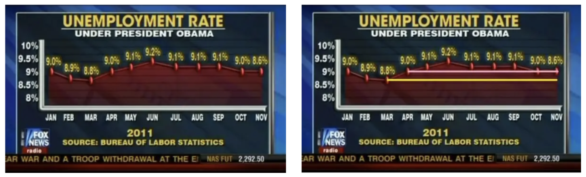

flowchart TD A[Data Source]-->E[Avaliable Data] E[Avaliable Data]-->B[Data Preprocessing] B["Preprocessing/Analysis"]-->D[Data Representation] A[Data Source]-->C[Trustworthy] D[Data Representation]-->C[Trustworthy] B["Preprocessing/Analysis"]-->C(((Trustworthy)))
การสื่อสารข้อมูลเพื่อการตัดสินใจในชั้นเรียน
Data-Driven Classroom
2024-11-11


Communicating with Data

Presentation Slide
InfoGraphic
Full Report
One-page Report
Dashboard
“If you’re only presenting data in text form, you’re actually doing a disservice to your reader.” (Column Five Media 2024)”
Data Visualization
“The visual representation and presentation of data to facilitate understanding” (Kirk 2019)
ดึงดูดความสนใจ: แผนภูมิและกราฟมีความสวยงาม ดูง่าย และน่าสนใจ ช่วยให้ผู้รับสารมีความสุขในการอ่านและทำความเข้าใจกับเนื้อหา (การออกแบบที่ดีช่วยยกระดับรายงานให้ดูน่าสนใจมากขึ้น ไม่ว่าจะมีข้อมูลหรือไม่)
ความเข้าใจ: การออกแบบที่ดีช่วยให้ผู้รับข้อมูลทำความเข้าใจได้ง่ายและรวดเร็วยิ่งขึ้น ลองคิดดูว่า การตีความข้อมูลเป็นตัวเลขในสเปรดชีตกับกราฟแท่งที่แสดงแนวโน้มเพิ่มขึ้นนั้น แบบไหนทำความเข้าใจได้ง่ายกว่า?
การจดจำ: นอกจากการเข้าใจแล้ว สมองยังสามารถจดจำภาพได้ง่ายขึ้น ทำให้สามารถเรียกคืนข้อมูลนั้นได้ง่ายกว่าในภายหลัง

Sources: Paul Martin Lester, “Syntactic Theory of Visual Communications,” 2006, and Harris Eisenberg, “Humans Process Visual Data Better,” Thermopylae Sciences, September 15, 2014.
Text vs Visual Form

Why’s Visualization
เป็นเครื่องมือที่สามารถนำเสนอข้อมูลปริมาณมากได้อย่างมีประสิทธิภาพ

“Bad graphs are everywhere” (Knaflic 2015)


Trustworthy (1)
ความถูกต้อง โปร่งใส และความสมบูรณ์ของข้อมูล
การนำเสนอข้อมูลที่ถูกต้อง โปร่งใส ไม่บิดเบือน

Trustworthy (2)



เลือก visualization ที่เหมาะสม
Visual Representation เป็นกระบวนการออกแบบ/ตัดสินใจเพื่อแปลงข้อมูลที่มีให้อยู่ในรูปของแผนภาพ หรืออาจกล่าวว่าเป็นกระบวนการตัดสินใจเลือกใช้แผนภาพที่เหมาะสมสำหรับแสดงสาระสำคัญของข้อมูล
แผนภาพ (Chart) = Marks + Attributes
Marks – องค์ประกอบที่ใช้แสดงข้อมูล
- ข้อความ (text)
- จุด (points)
- เส้น (lines)
- แท่ง (bars)
- พื้นที่ (areas)
- ปริมาตร (volume)
Attributes – variants ของ Marks
- ตำแหน่ง (position)
- ขนาด (size)
- สี (color)
- รูปร่าง (shape)
- ทิศทาง (orientation)
- ลักษณะพื้นผิว (texture)
Chart types

Attributes

เลือก visualization ที่เหมาะสม

Color as Distinguish Tools
สำหรับข้อมูลจัดประเภท เราสามารถเลือกโทนสี (hue) ที่แตกต่างกันเพื่อแทนประเภทของข้อมูลบนแผนภาพ ซึ่งช่วยให้ผู้อ่านสามารถแยกแยะความแตกต่างได้ง่าย

Color as Distinguish Tools

สิวะโชติ ศรีสุทธิยากร และคณะ (2567)
Represent Data Values
สีสามารถใช้แทนค่าข้อมูลที่เป็นเชิงปริมาณ (quantitative data) หรือเป็นข้อมูลแบบอันดับ (rank data) ได้ด้วย

Represent Data Values

Represent Data Values

Color as Highlight Tool
สียังสามารถใช้เป็นเครื่องมือเน้นสารสนเทศส่วนที่เป็นสาระสำคัญของแผนภาพได้อย่างมีประสิทธิภาพ

Color as Highlight Tool
สียังสามารถใช้เป็นเครื่องมือเน้นสารสนเทศส่วนที่เป็นสาระสำคัญของแผนภาพได้อย่างมีประสิทธิภาพ

Color as Highlight Tool

Color as Highlight Tool

ตัวอย่าง Qualitative Palette

ตัวอย่าง Sequential Palette

Sequential palette (และ diverging) ยังจำแนกได้อีก 2 ประเภท ได้แก่ discrete palette และ continuous palette

Diverging Palette

Colors Combination
Red-Blue Combination

Red-Green Combination

Color Blindness

Unnecessary Use of Color


Mood & Tone


User Accessibility
ง่ายในการอ่านและเข้าใจความหมาย: ออกแบบ visualization ที่สอดคล้องกับความรู้ ความเคยชิน หรือความคุ้นเคยของกลุ่มเป้าหมาย ไม่ควรต้องให้ผู้อ่านตีความมากเกินไป


เพิ่มข้อมูลเชิงบริบทที่จำเป็น

Comparative

Comparative + Historical + Equivalent

Comparative + Information
Comparative+Information
Scale Up/Down

Reproducible Report in Exploratory.io
คือการสร้างรายงานที่สามารถทำซ้ำได้ใน Exploratory.io ซึ่งเป็นแพลตฟอร์มที่ช่วยในการวิเคราะห์ข้อมูลและสร้าง visualization ได้อย่างง่ายดาย ด้วยคุณสมบัตินี้ ผู้ใช้งานสามารถสร้างรายงานที่สามารถอัปเดตได้โดยอัตโนมัติเมื่อข้อมูลใหม่ถูกเพิ่มเข้าไปหรือเมื่อนำไปรันในเครื่องมืออื่น ทำให้รายงานมีความสอดคล้องและเป็นปัจจุบันเสมอ (Exploratory 2018, 2019)

Dashboard
Dashboard is a visual display of data used to monitor conditions and/orfacilitate understanding. (“Front Matter” 2017)

Classroom Dashboard